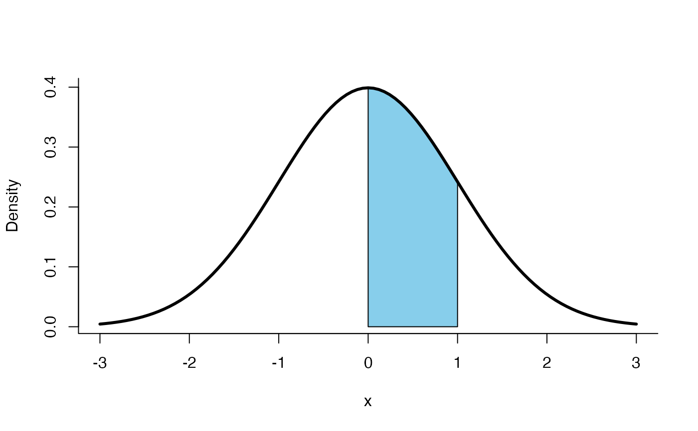
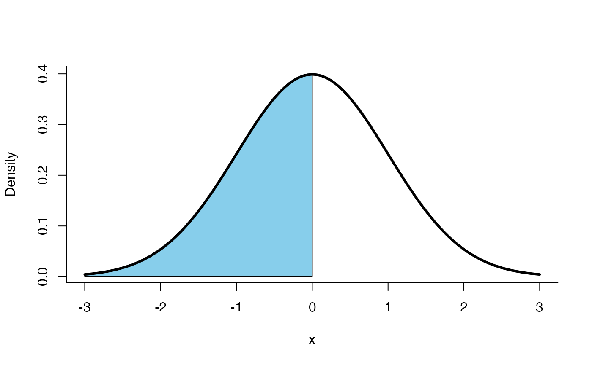
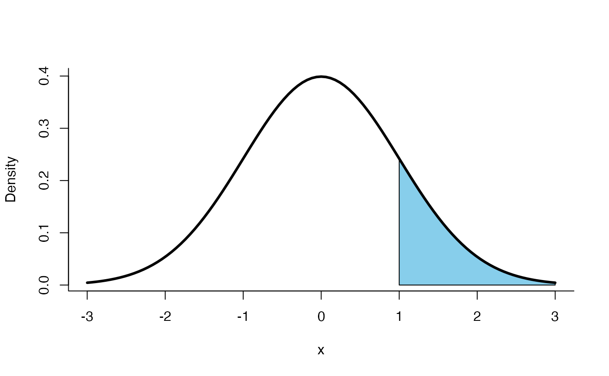
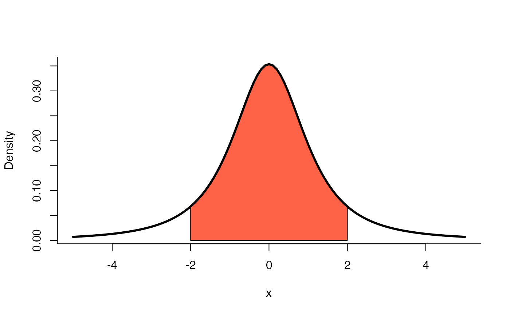
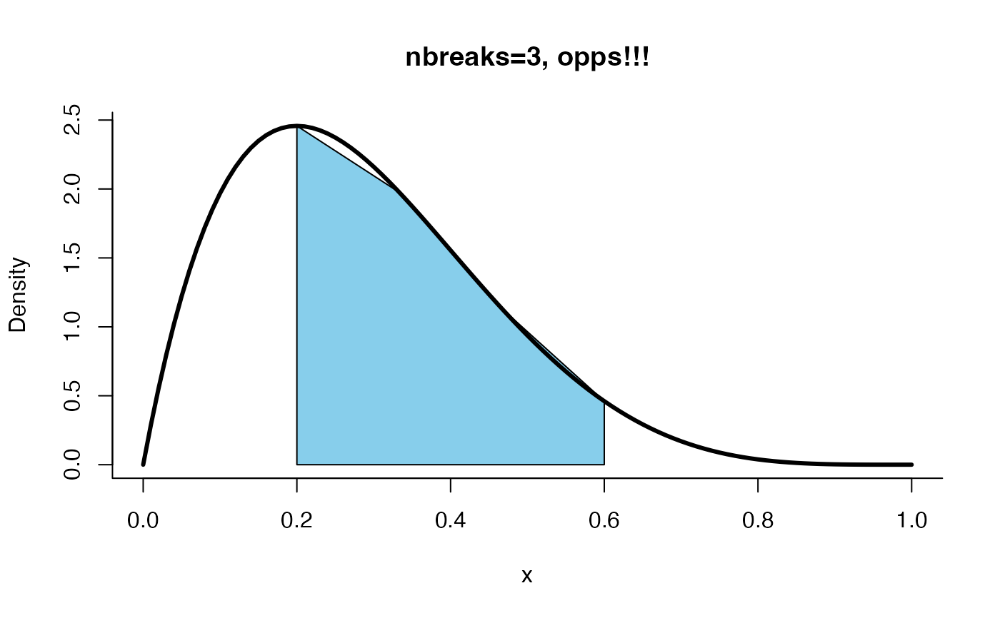
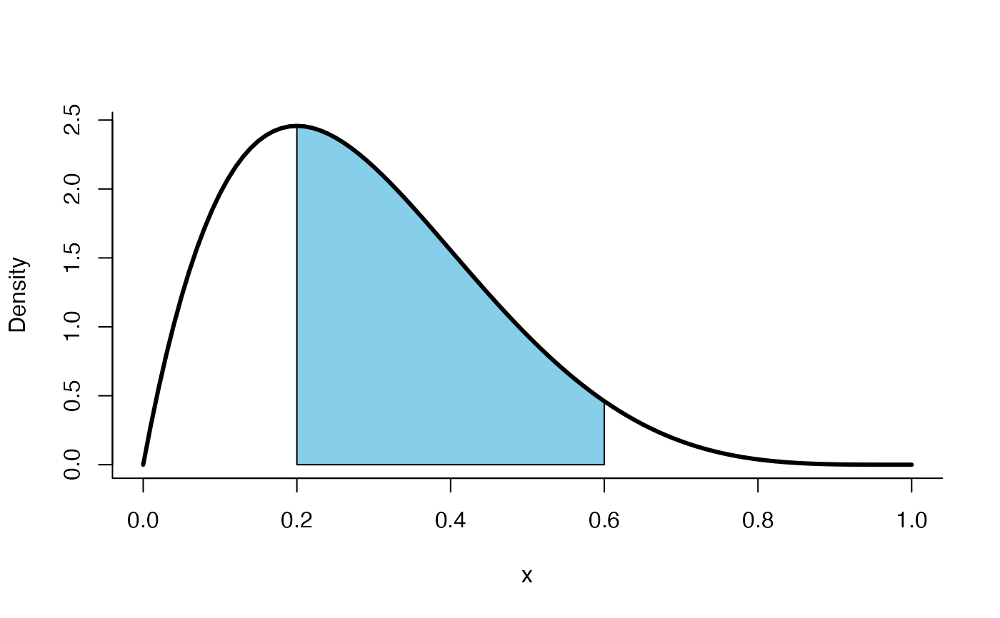

Shade for continuous distributions
shade.dist.RdThis function plots shades for any CONTINUOUS probability distribution
shade.dist( dist = "dnorm", param = list(mean = 0, sd = 1), a = NULL, b = NULL, type = "lower", from, to, col.shadow = "skyblue", col.line = "black", lwd = 3, nbreaks = 1000, ylab = NULL, x, ... )
Arguments
| dist | the distribution name as |
|---|---|
| param | is a list with the parameters of the distribution. |
| a | is the lower limit of the shaded area. |
| b | is the upper limit of the shaded area. |
| type | is used to define the shaded area, it could be |
| from | minimum X value to plot the density. |
| to | maximum X value to plot the density. |
| col.shadow | is the shade color, by default is |
| col.line | is the color line for the density. |
| lwd | is the line width, a positive number, defaulting to 3. |
| nbreaks | is the number of divisions to plot the shadow, by default is 10000. |
| ylab | is the y label, by default is 'Density'. |
| x | it is nothing. |
| ... | Arguments to be passed to methods, such as graphical parameters (see par). |
Examples
# With normal distribution shade.dist(dist='dnorm', param=list(mean=0, sd=1), a=0, b=1, type='middle', from=-3, to=3)# With chi-square distribution shade.dist(dist='dchisq', param=list(df=2), a=2, b=6, type='middle', from=0, to=10, col.shadow='pink')# With t distribution shade.dist(dist='dt', param=list(df=2), a=-2, b=2, type='middle', from=-5, to=5, col.shadow='tomato')# With beta distribution shade.dist(dist='dbeta', param=list(shape1=2, shape2=5), a=0.2, b=0.6, type='middle', from=0, to=1, nbreaks=3, main='nbreaks=3, opps!!!')shade.dist(dist='dbeta', param=list(shape1=2, shape2=5), a=0.2, b=0.6, type='middle', from=0, to=1, nbreaks=20)